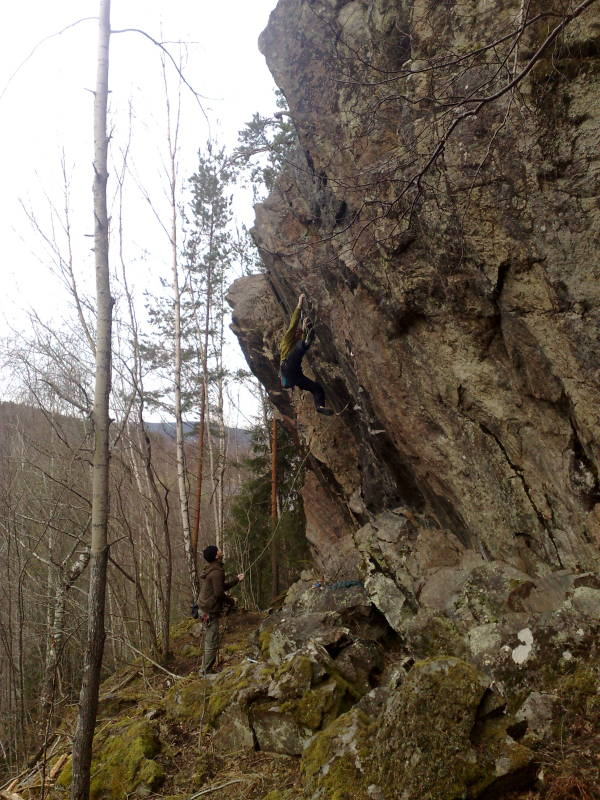

Åmotfors
GPS: 59.779148,12.308013
Allmänt
Strax utanför Åmotfors finns en klippa som på senare tid fått ett litet uppsving pga några nybultade leder.
Ta kontakt med
för mer information.
Vägbeskrivning
Kör längs riksväg 61 från Arvika mot Åmotfors/Charlottenberg/Norge. 2 mil från Arvika anländer du Åmotfors. Sväng av väg 61 till vänster mot Åmotfors (avfarten pekar mot ett industriområde som heter strand) och kör förbi den lilla bensinstationen. Kör under järnvägsviadukten och sväng vänster i korsningen därefter. Fortsätt genom det mäktiga centrumet (obs det går snabbt!). I korsningen vid kyrkan sväng höger mot Koppom. Fortsätt denna väg genom och ut ur samhället. Fortsätt någon kilometer tills du når en bro. Sväng ner höger precis innan bron och parkera så du inte är i vägen för någon/något. Går det inte på vägen/stigen så parkera på fickan på andra sidan vägen. Promenera på vägen längs älven någon minut. Fortsätt rakt fram när vägen övergår till en mindre stig och slyn blir irriterande. Börja spana upp åt höger när du får kliva över bävergnagda träd. Vid ett stort bävergnagt träd, leta dig upp genom stenrösen till höger och klippan kommer uppenbara sig efter några frustande höjdmeter.
Leder
- 1
- Spricka nr 4.5
- 6-
- Allra längst till vänster på berget går denna lilla offwidht, tack vare bergets unika vinkelsammansättning bjuds du på trivsam jugfest.
- 2
- Engstad
- 5
- Börjar under det stora taket, och drar sig innan dess början till vänster. Dåligt säkrad.
- 3
- Regnleden
- 4+
- trevlig led , skapligt lätt att leda , börjar på höger sida om det stora taket, sista biten i en svadieder. Det finns en utstegsvariant via den överhängande väggen (grad5)
- 4
- Påskleden
- 4+
- Börjar vid björkarna(a' tidigt 90 tal!)
- 5
- Anders killösa
- 5-
- Upp på väggen mellan Påskleden och Kommunisten, dåliga småkilar
- 6
- KPML(r)
- 6-
- Kan kännas igen på att klippan här är röd, tre insteg möjligt men vanligast i överhängande nisch , fin spricka . En klassiker !
- 7
- Kommunisten
- 6-
- samma insteg som led nr 5 men men traverserar halvvägs åt höger
- 8
- FAQ FRA
- 7
- 5 meter till höger om kpmlr. Otroligt brant startspricka med klassiska sportmoves leder upp till typiskt sportcrux! , Korsa höger och följ nästa dieder några meter innan du bryter ut på toppväggen , välsäkrad.
- 9
- Anarki
- 4+
- Sprickan femton meter till höger om Kommunisten. Snett upp åt vänster, bra säkringar
- 10
- Wall-E
- 6a+
- Första leden, går via ett lite klurigt minidieder upp, kan uppfattas som brant. Från hyllan som diedret mynnar ut i, inte lika delikat. toppankare.
- 11
- Solkatt
- 6b
- Går genom överhängets vänstra sida via tunna flak till balansig väggklättring på slutväggen, två alternativmöjligheter på slutväggen till vänster eller höger om sista bulten. Gemensamt ankare med led nr 11.
- 12
- Gravitationsdans
- 7b+
- Brant klättring mitt i väggen , tung position på mitten. Toppankare.
- 13
- Ina
- 6c
- överhängande liten tur som bjuder på lite motstånd för den skeptiske ! Toppankare
- 14
- Lilian
- 7a
- Pelaren till höger , pumpande , magnifika positioner. Toppankare.
- 15
- Lars
- 7a+
- På andra sidan pelaren. Drar sig åt vänster. Samma ankare som led nr 13.Obs omedelbart till höger om ledens mittdel finns två block som ser ut att kunna lossna om man hänger loss i dem , håll er till vänster ! ( Ska försöka få bort dem någon dag /m)
- 16
- Lars-lilian
- 7b
- Kör första halvan av Lars och gå över i sluthalvan av Lilian .Lite mer klättring !
- 17
- Den nya generationen
- 3+
- Den vänsterlutande hörnformationen som startar vid wanted-ledens insteg , välsäkrad , bra nybörjarled! Fin för sin grad
- 18
- Wanted
- 6b
- 6 meter vidare åt höger från Lilian ligger denna arete , rolig sportklättring ,4bb plus toppankare
, mitt i överhänget går

Bouldering
Om man istället fortsätter vägen/stigen rakt fram till ett jätteblock och där viker av upp åt höger i 40 m kommer man till en nyligen påbörjat boulder , ca 20 projekt och där det mest intressanta är det stora taket !
- 1
- Mia
- 6A
- Fin takkant-travers vid övre sidan av blocket
- 2
- Mio
- 6B
- Väggproblem på vänstra väggen med sittstart nere i en sjysst alkov.Fina krimpar!
- 3
- Max
- 6A
- Vänsterareten/kanten av taksidan , klurig onemove-wonder, typ.
- 4
- Mao
- 6C??
- Vänstra rampen i taket , gymnastisk .
- 5
- Maj
- 7A+
- Startar mellan Moa och Mao .
- 5
- Moa Direkt
- 7A+
- Moa utan högerkanten.Äntligen!!!
- 6
- Moa
- 7A
- Högra rampen i taket och högerkanten av taket bildar detta topp 5 problem .
- 7
- Kråkan
- 6A
- 10 m upp åt höger från huvudblocket, ligger denna lilla pärla , kass landning dock! .
Arvika Boulderförare
All bouldering i Jösse Härad återfinns numera på www.27crags.com
Uppdaterade leder, bilder osv hittas alltså på följande länk...
Kategori:sport
Kategori:trad
Kategori:vertikalt
Kategori:överhäng
Kategori:Bouldering
kategori:Saknar skiss
Category:Värmland
Copyright (C) Permission is granted to copy, distribute and/or modify this document under the terms of the GNU Free Documentation License, Version 1.3